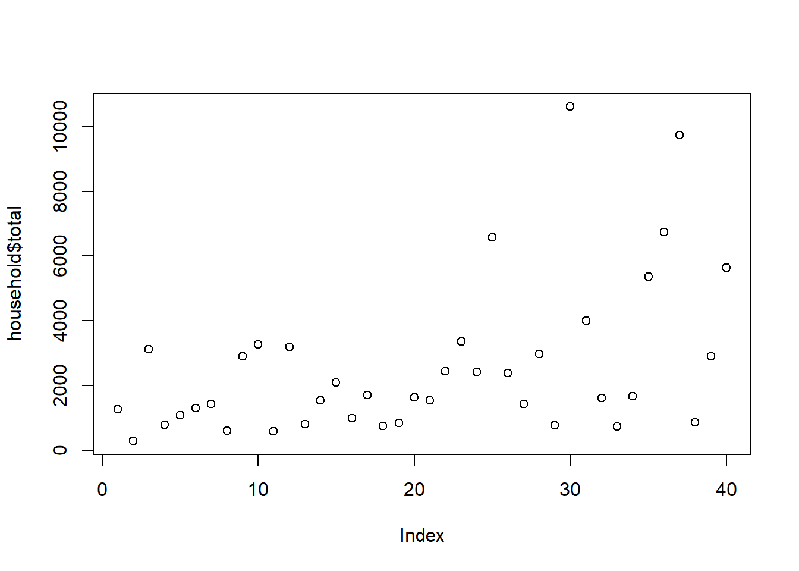
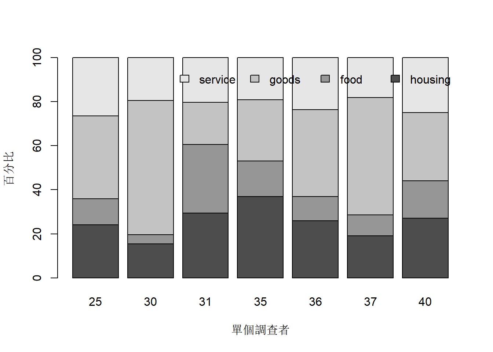
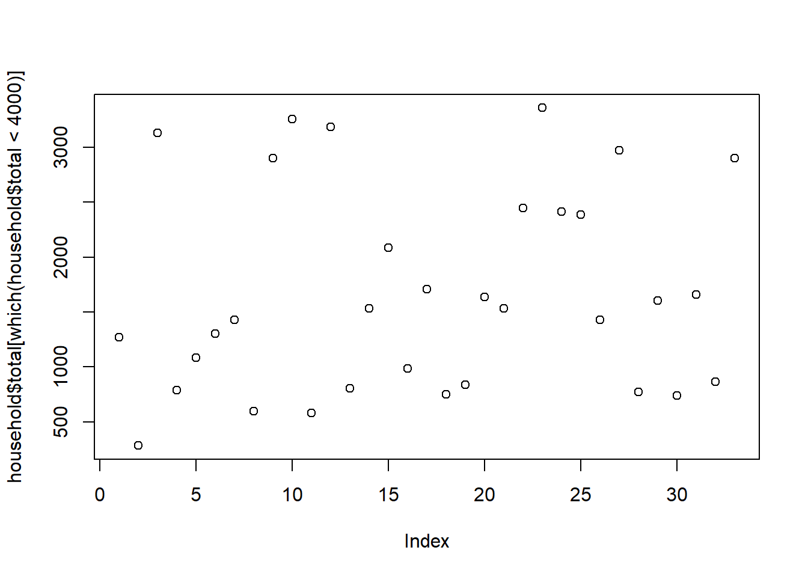
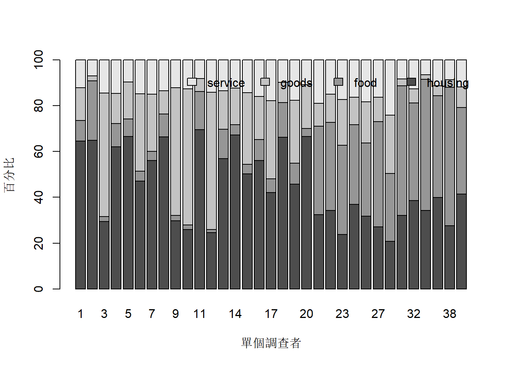
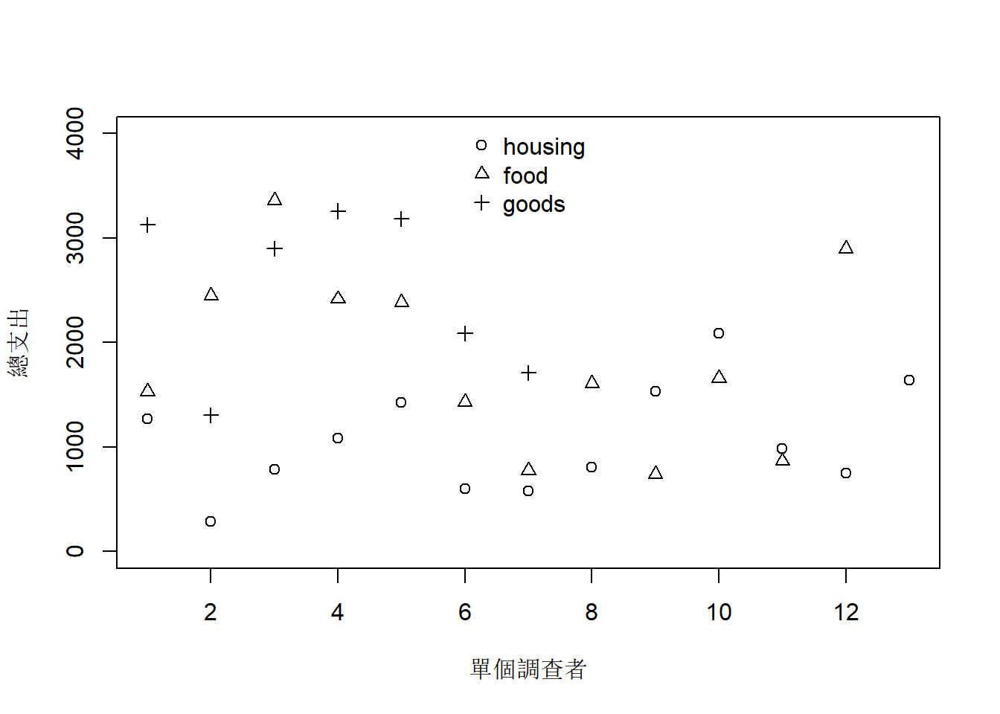

#加載包
library(HSAUR2)
#加載數據集
data(household)
#查看數據結構
str(household)
## 'data.frame': 40 obs. of 5 variables:
## $ housing: int 820 184 921 488 721 614 801 396 864 845 ...
## $ food : int 114 74 66 80 83 55 56 59 65 64 ...
## $ goods : int 183 6 1686 103 176 441 357 61 1618 1935 ...
## $ service: int 154 20 455 115 104 193 214 80 352 414 ...
## $ gender : Factor w/ 2 levels "female","male": 1 1 1 1 1 1 1 1 1 1 ...
head(household)
## housing food goods service gender
## 1 820 114 183 154 female
## 2 184 74 6 20 female
## 3 921 66 1686 455 female
## 4 488 80 103 115 female
## 5 721 83 176 104 female
## 6 614 55 441 193 female
# A data frame with 40 observations on the following 5 variables.
# housing:expenditure on housing, including fuel and light.
# food:expenditure on foodstuffs, including alcohol and tobacco.
# goods:expenditure on other goods, including clothing, footwear and durable goods.
# service:expenditure on services, including transport and vehicles.
# gender:a factor with levels female and male
# The data are part of a data set collected from a survey of household expenditure and give the expenditure of 20 single men and 20 single women on four commodity groups.
# The units of expenditure are Hong Kong dollars,
#計算總支出
household$total <- household$housing + household$food+ household$goods + household$service
# add percent item for 4 variable (exclud gender)
household$h <- household$housing/household$total*100
household$f <- household$food/household$total*100
household$g <- household$goods/household$total*100
household$s <- household$service/household$total*100
head(household)
## housing food goods service gender total h f g
## 1 820 114 183 154 female 1271 64.51613 8.969315 14.398112
## 2 184 74 6 20 female 284 64.78873 26.056338 2.112676
## 3 921 66 1686 455 female 3128 29.44373 2.109974 53.900256
## 4 488 80 103 115 female 786 62.08651 10.178117 13.104326
## 5 721 83 176 104 female 1084 66.51292 7.656827 16.236162
## 6 614 55 441 193 female 1303 47.12203 4.221028 33.844973
## s
## 1 12.116444
## 2 7.042254
## 3 14.546036
## 4 14.631043
## 5 9.594096
## 6 14.811972
# 為做條形圖整理數據
mdata <- matrix(c(household$h, household$f, household$g, household$s),
ncol=4,
dimnames=list(1:40, c("housing", "food", "goods", "service")))
#######################
# analysis
#########################
# 數據集中給出了調查對象的性別信息，
# 前二十個是女性，后二十個是男性
# 先看下總支出的散點圖
plot(household$total)
# plot(density(household$total[which(household$total<4000)]))
# 總支出可以分為兩大類別 以4000為分界線
#先來看下總支出在4000以上的高消費人群的特徵
# 4000以上的調查者編號
which(household$total>4000)
## [1] 25 30 31 35 36 37 40
# 25 30 31 35 36 37 40
#看下4000以上的具體數據
household[which(household$total>4000), ]
## housing food goods service gender total h f g
## 25 1585 781 2476 1740 male 6582 24.08083 11.865694 37.61775
## 30 1641 440 6471 2063 male 10615 15.45926 4.145078 60.96090
## 31 1180 1243 768 813 male 4004 29.47053 31.043956 19.18082
## 35 1981 869 1489 1032 male 5371 36.88326 16.179482 27.72296
## 36 1746 746 2662 1594 male 6748 25.87433 11.055127 39.44873
## 37 1865 915 5184 1767 male 9731 19.16555 9.402939 53.27304
## 40 1524 964 1739 1410 male 5637 27.03566 17.101295 30.84974
## s
## 25 26.43573
## 30 19.43476
## 31 20.30470
## 35 19.21430
## 36 23.62181
## 37 18.15846
## 40 25.01330
summary(household[which(household$total>4000), ]$total)
## Min. 1st Qu. Median Mean 3rd Qu. Max.
## 4004 5504 6582 6955 8240 10615
# Min. 1st Qu. Median Mean 3rd Qu. Max.
# 4004 5504 6582 6955 8240 10620
# 看下條形圖所反映的百分比情況
barplot(t(mdata[which(household$total>4000), ]), legend.text=TRUE,
args.legend=list(bty="n", horiz=TRUE),
xlab="單個調查者", ylab="百分比")
# 特徵1：都是男性調查者, 因為編號屬於后20位
# 特徵2：房屋支出占比較低，25%左右
# 特徵3：耐用品支出一般較高，37%左右
# 特徵4：服務支出較高，20%左右
# 特徵5：共7位調查者屬於高消費人群，占總調查人數的17.5%
# 7/40*100
# 標籤：吃穿用不愁、沒事買個奢侈品、找人服務下的高富帥們
#再來看下總支出在4000以下的人群
plot(household$total[which(household$total<4000)])
# plot(density(household$total[which(household$total<4000)]))
barplot(t(mdata[which(household$total<4000), ]), legend.text=TRUE,
args.legend=list(bty="n", horiz=TRUE),
xlab="單個調查者", ylab="百分比")
#部份人住房支出較高50%以上
#部份人食品支出較高30%以上
#部份人耐用品支出較高30%以上
# 4000以下的調查者編號 33個
which(household$total<4000)
## [1] 1 2 3 4 5 6 7 8 9 10 11 12 13 14 15 16 17 18 19 20 21 22 23
## [24] 24 26 27 28 29 32 33 34 38 39
# 1 2 3 4 5 6 7 8 9 10 11 12 13 14 15 16 17 18
# 19 20 21 22 23 24 26 27 28 29 32 33 34 38 39
#看下4000以下並且住房支出占比50%以上的調查者編號 13個
which(household$total<4000 & household$h>50)
## [1] 1 2 4 5 7 8 11 13 14 15 16 18 20
# 1 2 4 5 7 8 11 13 14 15 16 18 20
#看下具體數據
household[which(household$total<4000 & household$h>50), ]
## housing food goods service gender total h f g
## 1 820 114 183 154 female 1271 64.51613 8.969315 14.398112
## 2 184 74 6 20 female 284 64.78873 26.056338 2.112676
## 4 488 80 103 115 female 786 62.08651 10.178117 13.104326
## 5 721 83 176 104 female 1084 66.51292 7.656827 16.236162
## 7 801 56 357 214 female 1428 56.09244 3.921569 25.000000
## 8 396 59 61 80 female 596 66.44295 9.899329 10.234899
## 11 404 97 33 47 female 581 69.53528 16.695353 5.679862
## 13 457 103 136 108 female 804 56.84080 12.810945 16.915423
## 14 1029 71 244 189 female 1533 67.12329 4.631442 15.916504
## 15 1047 90 653 298 female 2088 50.14368 4.310345 31.273946
## 16 552 91 185 158 female 986 55.98377 9.229209 18.762677
## 18 495 114 65 74 female 748 66.17647 15.240642 8.689840
## 20 1090 59 313 177 female 1639 66.50397 3.599756 19.097010
## s
## 1 12.116444
## 2 7.042254
## 4 14.631043
## 5 9.594096
## 7 14.985994
## 8 13.422819
## 11 8.089501
## 13 13.432836
## 14 12.328767
## 15 14.272031
## 16 16.024341
## 18 9.893048
## 20 10.799268
#看下該群體的總支出數據情況
summary(household[which(household$total<4000 & household$h>50), ]$total)
## Min. 1st Qu. Median Mean 3rd Qu. Max.
## 284 748 986 1064 1428 2088
# Min. 1st Qu. Median Mean 3rd Qu. Max.
# 284 748 986 1064 1428 2088
# 特徵1：全是女性調查者
# 特徵2：房屋支出占比高，50%以上
# 特徵3：總支出總體上在2000以下, 中位數是986
# 特徵4：共13位調查者，占總調查人數的32.5%
# 13/40*100
# 標籤：紮進褲腰帶還房貸或房租的艱苦奮鬥省吃儉用的苦逼月光女同胞
#看下4000以下並且食品支出占比30%以上的調查者編號 12個
which(household$total<4000 & household$f>30)
## [1] 21 22 23 24 26 27 29 32 33 34 38 39
# 21 22 23 24 26 27 29 32 33 34 38 39
#看下具體數據
household[which(household$total<4000 & household$f>30), ]
## housing food goods service gender total h f g
## 21 497 591 153 291 male 1532 32.44125 38.57702 9.986945
## 22 839 942 302 365 male 2448 34.27288 38.48039 12.336601
## 23 798 1308 668 584 male 3358 23.76415 38.95176 19.892793
## 24 892 842 287 395 male 2416 36.92053 34.85099 11.879139
## 26 755 764 428 438 male 2385 31.65618 32.03354 17.945493
## 27 388 655 153 233 male 1429 27.15185 45.83625 10.706788
## 29 248 438 22 65 male 773 32.08279 56.66235 2.846054
## 32 619 684 99 204 male 1606 38.54296 42.59029 6.164384
## 33 253 422 15 48 male 738 34.28184 57.18157 2.032520
## 34 661 739 71 188 male 1659 39.84328 44.54491 4.279687
## 38 238 522 29 75 male 864 27.54630 60.41667 3.356481
## 39 1199 1095 261 344 male 2899 41.35909 37.77165 9.003105
## s
## 21 18.994778
## 22 14.910131
## 23 17.391304
## 24 16.349338
## 26 18.364780
## 27 16.305108
## 29 8.408797
## 32 12.702366
## 33 6.504065
## 34 11.332128
## 38 8.680556
## 39 11.866161
#看下該群體的總支出數據情況
summary(household[which(household$total<4000 & household$f>30), ]$total)
## Min. 1st Qu. Median Mean 3rd Qu. Max.
## 738 1288 1632 1842 2424 3358
# Min. 1st Qu. Median Mean 3rd Qu. Max.
# 738 1288 1632 1842 2424 3358
# 特徵1：全是男性調查者
# 特徵2：食品支出占比高，30%以上
# 特徵3：總支出總體上在3500以下，中位數是1632
# 特徵4：共12位調查者，占總調查人數的30%
# 12/40*100
# 標籤：伴隨總支出的增加，終於可以在支付房貸或租金后
# 放心大膽的吃喝認為明天更美好的男同胞
#看下4000以下並且耐用品支出占比30%以上的調查者編號 7個
which(household$total<4000 & household$g>30)
## [1] 3 6 9 10 12 15 17
# 3 6 9 10 12 15 17
#看下具體數據
household[which(household$total<4000 & household$g>30), ]
## housing food goods service gender total h f g
## 3 921 66 1686 455 female 3128 29.44373 2.109974 53.90026
## 6 614 55 441 193 female 1303 47.12203 4.221028 33.84497
## 9 864 65 1618 352 female 2899 29.80338 2.242152 55.81235
## 10 845 64 1935 414 female 3258 25.93616 1.964395 59.39227
## 12 781 47 1906 452 female 3186 24.51350 1.475204 59.82423
## 15 1047 90 653 298 female 2088 50.14368 4.310345 31.27395
## 17 718 104 583 304 female 1709 42.01287 6.085430 34.11352
## s
## 3 14.54604
## 6 14.81197
## 9 12.14212
## 10 12.70718
## 12 14.18707
## 15 14.27203
## 17 17.78818
#看下該群體的總支出數據情況
summary(household[which(household$total<4000 & household$g>30), ]$total)
## Min. 1st Qu. Median Mean 3rd Qu. Max.
## 1303 1898 2899 2510 3157 3258
# Min. 1st Qu. Median Mean 3rd Qu. Max.
# 1303 1898 2899 2510 3157 3258
# 特徵1：全是女性調查者
# 特徵2：衣服鞋子及耐用品支出占比高，30%~60%之間
# 特徵3：總支出總體上在3500以下，中位數是2899
# 特徵4：共7位調查者，占總調查人數的17.5%
# 7/40*100
# 標籤：伴隨總支出的增加，終於可以在支付房貸或租金后
# 放心大膽的瘋狂購物認為未來可以嚮往的女同胞
#看下總支出4000以下的三類人群的總支出大體位置
plot(household$total[which(household$total<4000 & household$h>50)], pch=1, ylim=c(0, 4000),
ylab="總支出", xlab="單個調查者")
points(household$total[which(household$total<4000 & household$f>30)], pch=2)
points(household$total[which(household$total<4000 & household$g>30)], pch=3)
legend("top", legend=c("housing", "food", "goods"), pch=1:3, bty="n")
下面開始YY，這個小數據集剛好是三足鼎立啊
17.5%人總支出在4000以上 是上層,吃穿用不愁、沒事買個奢侈品、找人服務下的高富帥們
47.5%人總支出在4000以下 那些放心大膽吃喝的男同胞加上瘋狂購物的女同胞是中間階級
還有32.5%人總支出在2000以下 紮進褲腰帶還房貸或房租的艱苦奮鬥省吃儉用的苦逼月光女屌絲是底層人民啊
還有2.5%的人是正從底層向中間攀爬的人，呵呵，暫時忽略不計 因為如果爬上去，就屬於中間的人，掉下來，還是底層人民
總體而言，還是三足鼎立啊
鄭重聲明：此分析純屬虛構，數據也是習題而已
备注：转移自新浪博客，截至2021年11月，原阅读数61，评论0个。